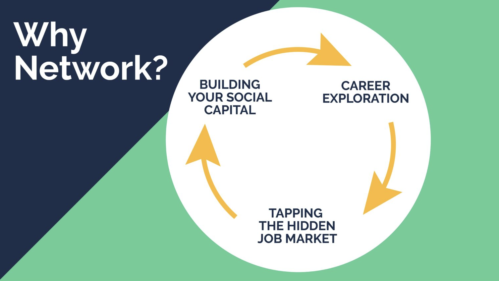

Use these communities, job boards and tools to help you land your next role.
Rebel Meetups
Free global, in person networking events for entrepreneurially minded people, run monthly
The Portfolio Colletive
Free online community networking for those who are looking to have multipule sorces of income (portfolio careers)
Accountability Crew
Free online accountability sessions with a community of creatives, job seekers and freelancers.
